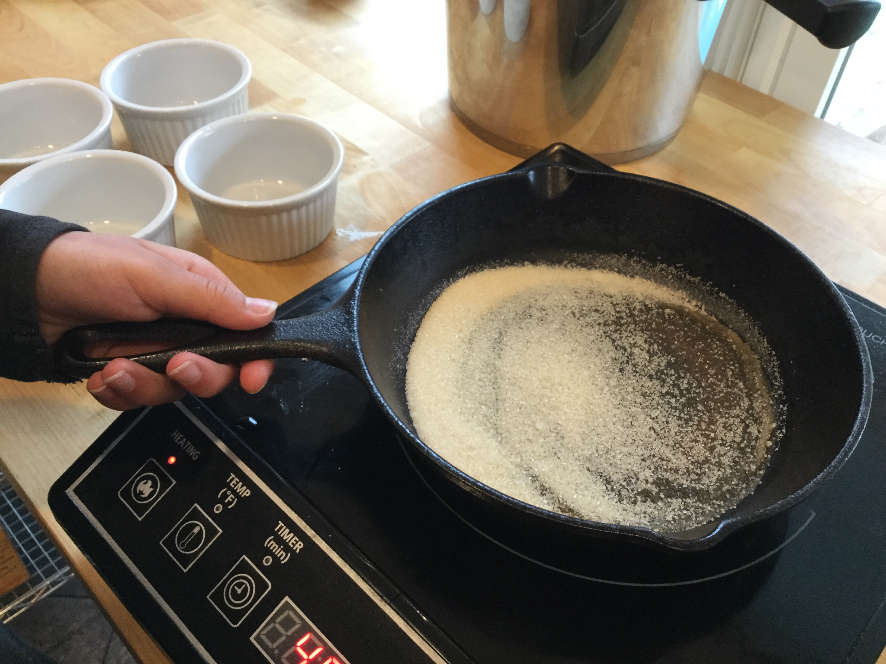
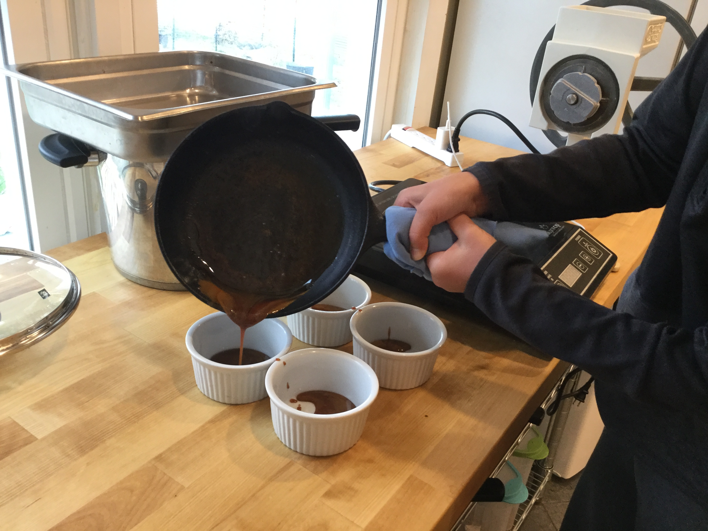
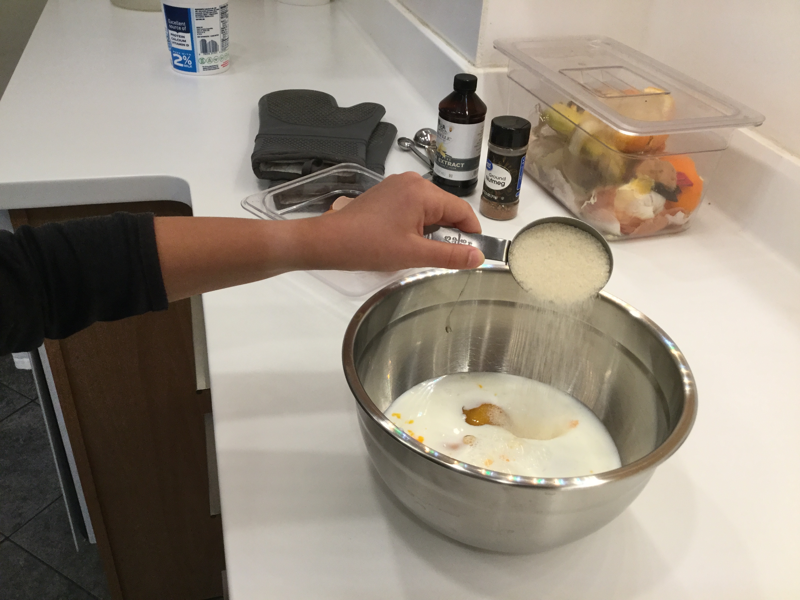
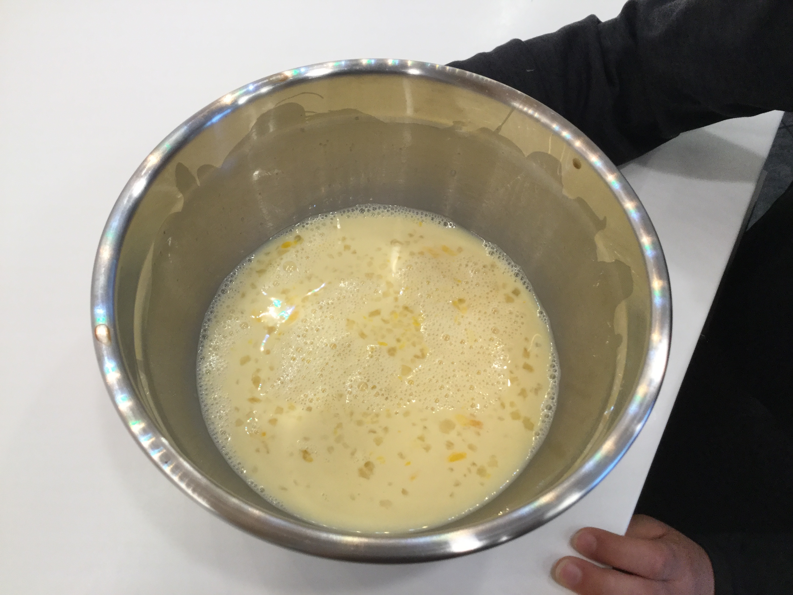
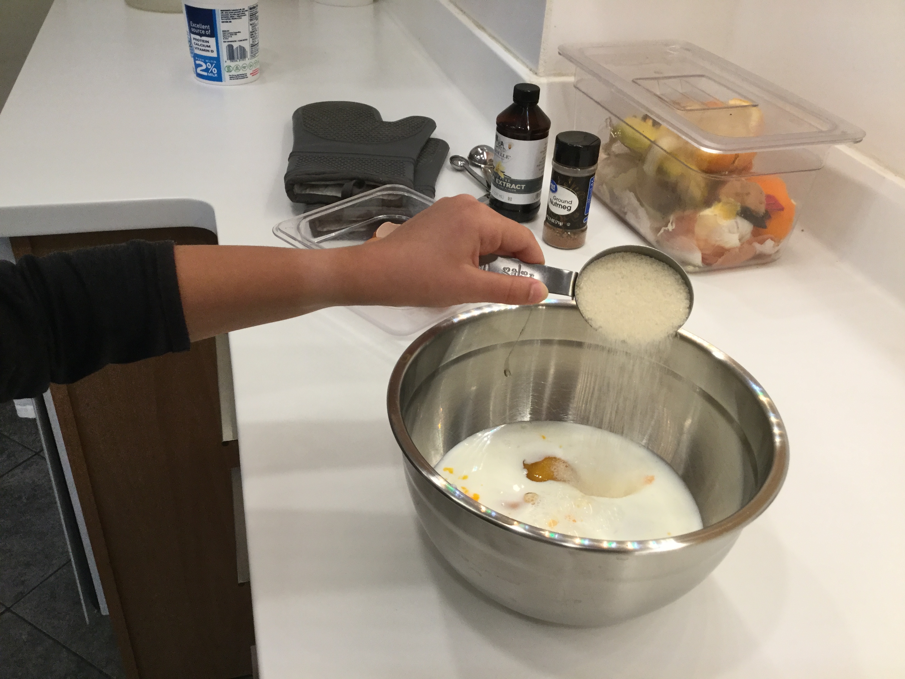
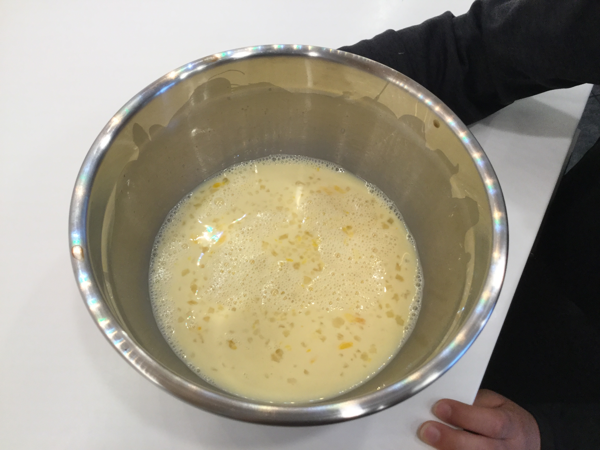
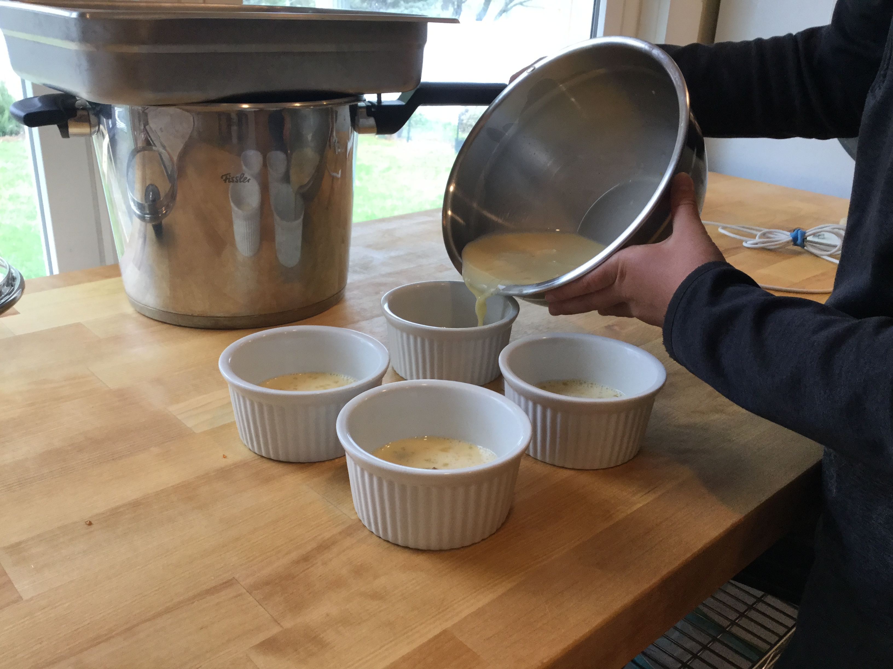
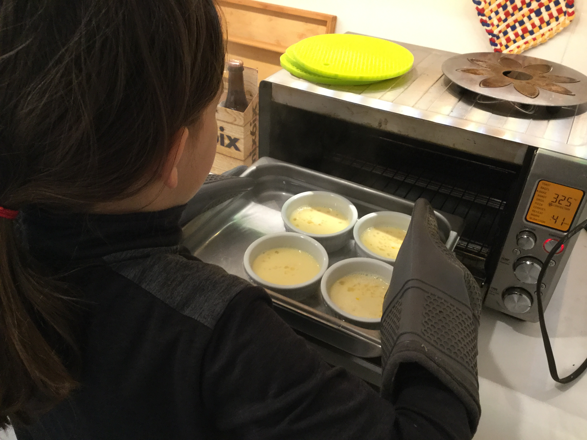
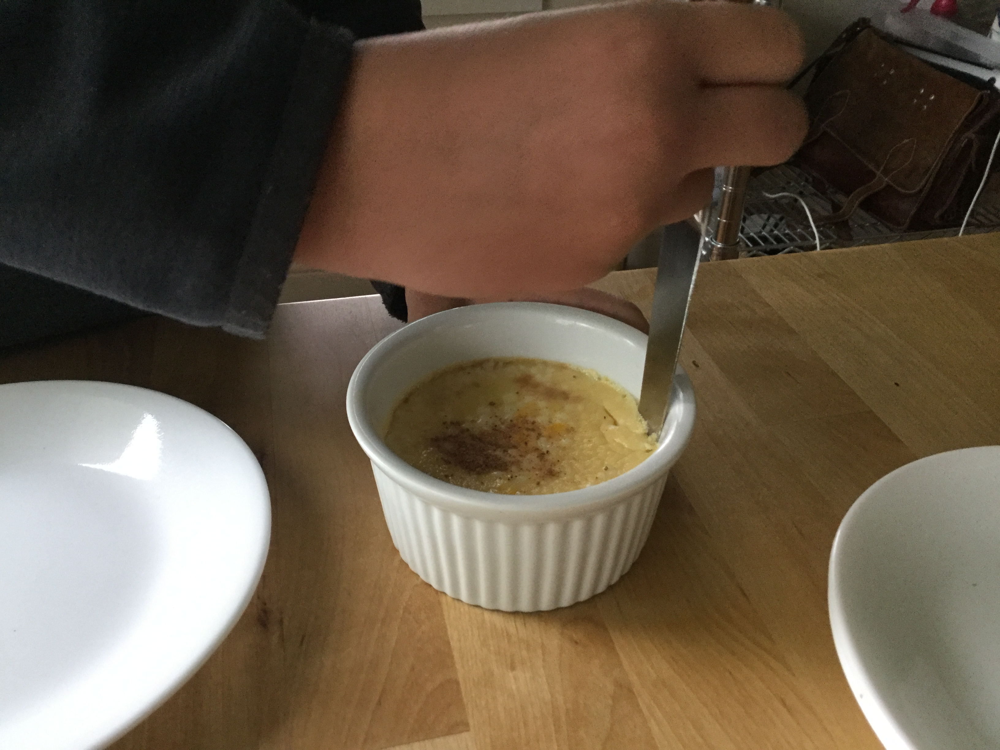

Put half of the sugar in a pan and heat it on high.
When the sugar starts to caramelize and look like this:

turn the heat off and pour an even amount of sugar into each of the dishes.
Next, make the custard filling. Mix the eggs, the rest of the sugar, the vanilla, and the milk in a large bowl.
 



Then, evenly distribute the mixture to the 4 custard dished filled with melted sugar. (the sugar should be hard by now)
Next, put the dishes in a large par and fill it with boiling water. Then bake in a 325° oven for 30 to 45 minutes. If the flan forms a skin on top, then put a sheet of foil over the custard dishes and cook for a little while longer.
When the flan cools, cut around the edges of a custard dish and place a plate upside down on top. Turn the whole thing over and shake. After a couple shakes, remove the custard dish. The flan should come out.
 <